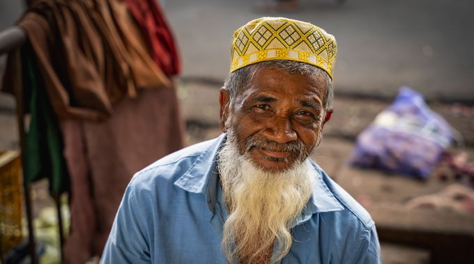
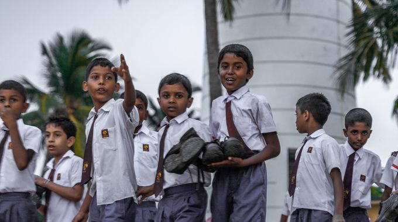
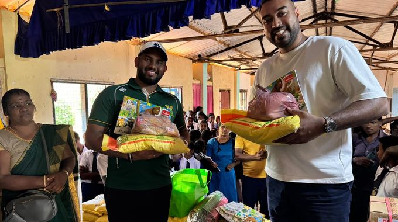

Give once. Give forever.
A permanent endowment for Sri Lanka. Your contribution is invested rather than spent, and the returns fund education, relief of hardship and emergency response every year.
Why we built this
For most of our lives, we have tried to help the people of Sri Lanka by giving directly. School supplies for children, mattresses for orphanages, relief after cyclones, computer labs for small village schools.
Each trip left us with the same feeling: grateful, but aware of how little a one-off donation can do.
We wanted something more permanent. Something that would keep giving, even after we stopped. Something that would grow, not shrink, with time.
That is why we built The Serendib Endowment. Not as a replacement for what we have always done, but as a foundation beneath it. A structure that means the giving never has to stop.
An endowment, not an appeal
Your contribution is not spent. It is invested permanently as part of the corpus, and only the returns are given away. The capital stays intact and keeps growing, so the fund can keep giving indefinitely and the annual distribution increases as it matures.
Protected permanently
The constitution requires the corpus to be preserved intact. It cannot be distributed or spent under any circumstances.
Invested and distributed
The fund targets a real return of CPI plus 4%, and distributes less than it earns, calculated on a rolling three-year average corpus.
Giving that compounds
What is not distributed is reinvested, so the amount reaching Sri Lanka grows year on year rather than running out.
What the fund supports
The constitution sets three charitable purposes, all directed at Sri Lanka.

Purpose IPoverty and hardship
Practical goods for individuals, families and communities in need, whatever the need calls for, bought locally and delivered directly.

Purpose IIAccess to education
Whatever removes the barrier to a child attending school, from books and bags to equipment for a classroom, and scholarships where they make the difference.

Purpose IIIDisaster and emergency
Essential supplies for communities affected by natural disaster or emergency, matched to what is actually needed and delivered through relationships already in place.
See it for yourself
An endowment is arithmetic. Beside this are the figures we have set, and the shape they produce: a corpus that keeps growing while it gives, year after year.
You do not have to take those figures on trust. On the modelling page every one of them is yours to change, so you can lower the return, raise the distribution, and see for yourself what happens to the fund over twenty-five years.
The first two are ours to set. The last two are assumptions, not forecasts: returns are not guaranteed, and no future gift is promised. Open the model to change any of them.
The founding fund
The corpus is being seeded now by a small group of founding contributors. Contributions are held in the fund's account until the corpus reaches its A$50,000 target, at which point it is invested. The fund then needs time invested before it has returns to give away.
From then on, what the fund gives is set by what it has earned. Each financial year the directors decide the distribution from the returns actually made, and how many times to distribute it across the year. Every contribution after that adds to the same permanent capital, so what the fund can give grows rather than resetting.
Latest
Announcements, statements and annual letters, most recent first.
Dr Dinesh Palipana OAM and Tamara Flynn appointed as directors
At a directors' meeting on 7 October 2026 the directors appointed Dr Dinesh Palipana OAM and Ms Tamara Flynn to the board.
Read the updateOn 4EB 98.1 FM, Brisbane's Sri Lankan Program
Sasenka Abeysooriya and Dulip Ranasinghe spoke about the endowment on 4EB 98.1 FM, Brisbane's multicultural community radio station, as guests of the Sri Lankan Program.
Read the updateGive once. Give forever.
Every contribution, of any size, becomes a permanent part of the corpus.
Ways to give Talk to us first